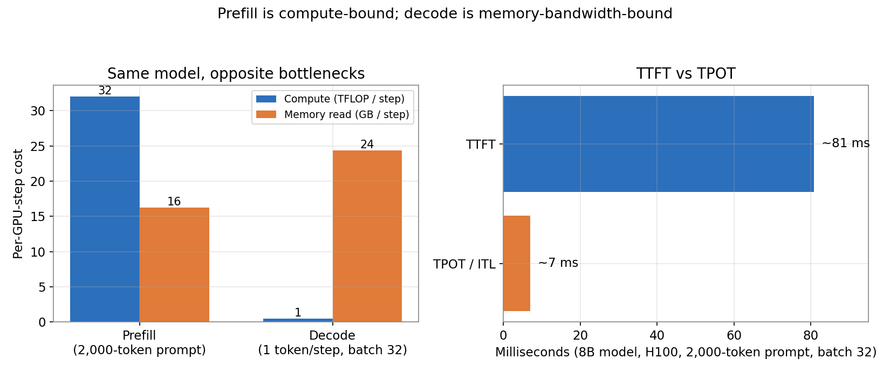
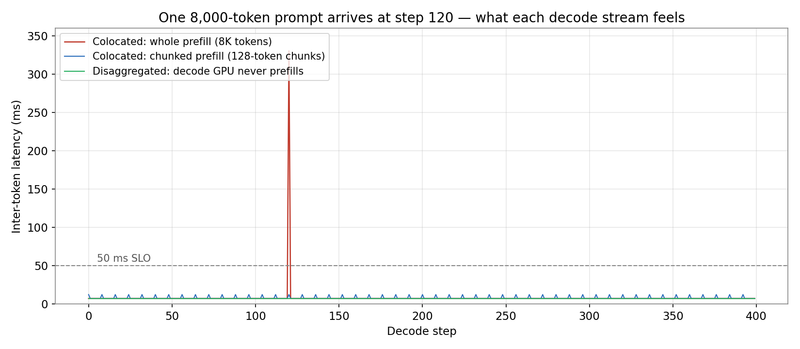
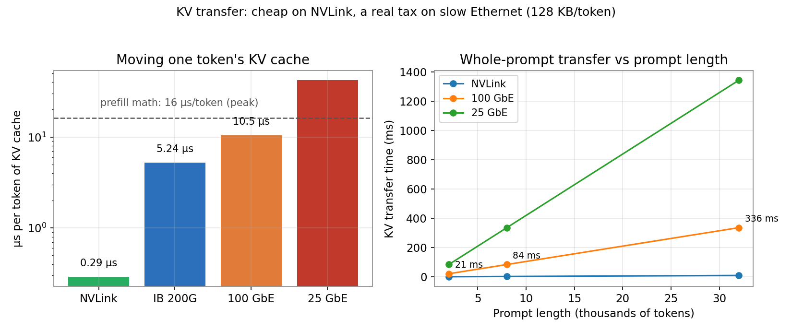
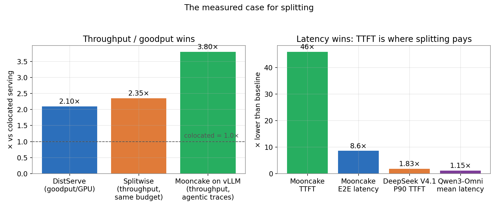

A user pastes an 8,000-token document into a chat box and hits send. On the server, that prompt takes about 320 milliseconds of pure GPU math to process. For those 320 milliseconds, every other user already chatting on that same GPU gets nothing — their text freezes mid-sentence. One new request, thirty-two frozen streams. The average latency barely moves. The tail latency explodes.
That freeze is the whole reason LLM serving split in two. Your request is not one job. It is two jobs with opposite appetites, sharing one GPU, and the fix — running them on separate pools of GPUs and shipping the KV cache between them — is now a first-class feature of vLLM 0.33. This is GDE post #3 in the vLLM serving series: what prefill and decode actually cost, why they fight, and when splitting them pays — with the numbers, the launch commands, and the ways it breaks.
The ELI5 version
Imagine a restaurant kitchen with one stove and two chefs who need it for completely different things.
The prep chef gets a huge order all at once — chop 2,000 carrots. It is one big, parallelizable burst of work: the more burners she can use at once, the faster it goes. She is done in minutes, and then she has nothing to do until the next order arrives. That is prefill: the model reads your entire prompt in one compute-bound pass and builds the KV cache — the running memory of everything it has read.
The line chef plates one dish at a time, all evening. Each plate takes seconds, and most of the time is spent walking to the pantry and back — fetching ingredients — not cooking. He is busy for hours, but each individual step is small. That is decode: the model generates one token per step, and each step is dominated by reading the model's 16 GB of weights (plus every live user's KV cache) off memory. It is memory-bandwidth-bound, not compute-bound.
One stove, two chefs, opposite rhythms. The prep chef's big burst blocks the line chef's steady flow — that is the 320 ms freeze. The restaurant's answer is obvious: give them separate stoves. Prefill gets its own GPUs, decode gets its own GPUs, and the only thing that crosses between them is the prepped ingredients — the KV cache. That is prefill/decode disaggregation.
Two numbers track the two chefs. TTFT (time to first token) is dominated by prefill: how long until the user sees anything. TPOT (time per output token), and its per-gap cousin ITL (inter-token latency), are set by decode: how fluid the stream feels once it starts. A serving system is judged on both, at high percentiles — and on goodput, the request rate it sustains while 90% of requests still meet both SLOs.
How it works: two phases, one transfer
The arithmetic, for an 8B-class model on one H100. Prefill costs 2 × parameters FLOPs per token — about 16 microseconds per token at peak, ~40 µs at a realistic 40% MFU. A 2,000-token prompt costs ~81 ms; an 8,000-token prompt costs ~323 ms. Decode costs one full read of the weights per step: 16 GB at 3.35 TB/s is ~4.9 ms before any KV cache is read, ~7.3 ms with 32 users at 2,000 tokens of context each. Prefill time grows with prompt length; decode-step time grows with batch × context. Different knobs, different scaling — one schedule cannot serve both.

The interference, measured. Our simulation runs 400 decode steps with an 8,000-token prompt arriving at step 120. Colocated, whole-prompt prefill: the worst gap hits 330 ms — a visible freeze — while the average gap stays 7.3 ms. That is the trap: averages hide it, users feel it. Chunked prefill (Sarathi-Serve's fix: slice the prompt into 128-token chunks and interleave them with decode steps) caps the worst gap at 12.5 ms. Disaggregation removes it entirely: the decode GPU never prefills, so the worst gap is the baseline 7.3 ms. Chunked prefill is the cheap fix and the right default at small scale; disaggregation is the fix when you need the two phases tuned and scaled independently.

What crosses the wire. The KV cache for an 8B model is 128 KB per token (32 layers × K and V × 8 KV heads × 128 dimensions × 2 bytes). A 2,000-token prompt produces 256 MB of KV cache that must move from the prefill GPU to the decode GPU. The cost depends entirely on the link: 0.29 µs per token on NVLink (0.6 ms for the whole prompt), 5.2 µs on InfiniBand 200 Gb/s, 10.5 µs on 100 GbE (21 ms for 2,000 tokens), 41.9 µs on 25 GbE (84 ms). Against ~16 µs of prefill math per token, NVLink's transfer is 2% overhead and 25 GbE's is 260% — the transfer costs more than the compute it replaces. The interconnect is the decision, not the idea.

Running it in vLLM 0.33. Disaggregated prefill is experimental in 0.33 (docs at v0.33.0rc3) and the shape is simple: a prefill pool, a decode pool, and a proxy that choreographs them. Launch a producer and a consumer with the NIXL connector:
# Prefill pool (GPU 0, port 8100)
CUDA_VISIBLE_DEVICES=0 UCX_NET_DEVICES=all VLLM_NIXL_SIDE_CHANNEL_PORT=5600 \
vllm serve Qwen/Qwen3-0.6B --port 8100 --enforce-eager \
--kv-transfer-config '{"kv_connector":"NixlConnector","kv_role":"kv_producer","kv_load_failure_policy":"fail"}'
# Decode pool (GPU 1, port 8200)
CUDA_VISIBLE_DEVICES=1 UCX_NET_DEVICES=all VLLM_NIXL_SIDE_CHANNEL_PORT=5601 \
vllm serve Qwen/Qwen3-0.6B --port 8200 --enforce-eager \
--kv-transfer-config '{"kv_connector":"NixlConnector","kv_role":"kv_consumer","kv_load_failure_policy":"fail"}'
The proxy — vLLM ships a toy one for reference — sends each request to a prefill instance with max_tokens=1, stream=False, and kv_transfer_params={"do_remote_decode": True, ...}, reads the transfer parameters back from the prefill response, attaches them to the decode request, and streams the decoder's output to the client. The client sees one ordinary streamed response. NIXL (NVIDIA Inference Transfer Library, open-sourced March 2026) is the default transfer path; Mooncake and LMCache connectors plug into the same --kv-transfer-config slot — MooncakeConnector for point-to-point handoff, MooncakeStoreConnector for a pooled KV store, LMCacheConnector for prefix reuse. Three details that bite in practice: the side-channel port defaults to 5600 and must be unique per worker on a host (base + data-parallel rank); KV blocks are leased for 30 seconds by default and decode-side blocks live 480 seconds; and kv_role="kv_both" is deprecated for the NIXL connector — use producer/consumer.
Sizing the pools. The two pools want different GPU counts, and Little's law tells you the ratio: GPUs = arrival rate × service time / target utilization. At 20 requests per second, 2,000-token prompts, 200 output tokens: prefill needs ~2 GPUs, decode needs ~36 at 80% utilization — a 1:18 ratio. That ratio is traffic-dependent (short prompts, long outputs → even more decode-heavy), which is exactly why the pools must scale independently. Get the ratio wrong and the split just moves the queue from one pool to the other.
Beyond two pools. vLLM 0.32 added EPD disaggregation — a third pool for multimodal encoders — and the November 11 update extended it with metadata-only forwarding (the encoder sends a reference, not the pixels) and cross-encoder caching. Measured on Qwen3-Omni: +17.6% throughput, −13.0% mean latency. On DeepSeek V4.1 Flash over GB200: 44–47% lower P90 TTFT, 6.6–9.5% higher per-GPU throughput at concurrency 64–128. The pattern generalizes: any stage with a different resource profile earns its own pool.
The state of the art: what splitting actually buys
The idea is three years old and the measurements have converged. Splitwise (Microsoft/UW, ISCA 2024) ran prefill on H100s and decode on power-capped A100s (700 W → 350 W barely slowed decode, while prefill slowed ~2×) and reported up to 2.35× throughput at the same power and cost budget, or 1.4× throughput at 20% lower cost. DistServe framed the metric — goodput — and measured 1.6 requests/s colocated vs 10 requests/s on 2 prefill + 1 decode GPUs, 2.1× goodput per GPU, or equivalently 7.4× more requests at the same latency objective. Mooncake (Moonshot AI's KV-cache-centric design, behind Kimi) reported +525% throughput in simulation and +115% more requests absorbed on A800 hardware in production; vLLM's May 2026 engineering-blog benchmark on 12 GB200 GPUs measured 3.8× throughput, 46× lower TTFT, and 8.6× lower end-to-end latency on agentic traces.

Note what those wins have in common: they are latency and goodput wins, not raw-throughput wins. The GPUs do the same math as before, plus a copy. vLLM's docs say it in capitals: "Disaggregated prefill DOES NOT improve throughput." What it buys is separately tunable TTFT and tail ITL, and the freedom to run decode on cheaper, power-capped, or older GPUs. Anyone selling disaggregation as free throughput is selling the copy as if it were free compute.
Why it breaks
The pool ratio is the whole game. Prefill and decode scale differently with traffic mix. A burst of long prompts starves the prefill pool while decode GPUs idle; a burst of long generations does the reverse. Static ratios waste GPUs; the production answer is autoscaling per pool against its own SLO (TTFT for prefill, TPOT for decode), which is operational work the colocated setup never needed.
Slow networks invert the win. Our notebook's decision rule: the split wins when the transfer tax is smaller than the stall it removes. On 100 GbE the tax is ~26% of the stall at every prompt length — a clear win. On 25 GbE the tax exceeds the stall (41.9 µs/token of transfer vs ~40 µs/token of prefill math), so splitting makes TTFT worse. If your prefill and decode pools are in different racks on old Ethernet, chunked prefill on one pool beats disaggregation across the wire.
The failure policy matters. If a KV transfer fails, vLLM's default is fail — the request errors rather than silently degrading. The alternative, recompute, re-runs prefill on the decode instance, which is exactly the interference you split to avoid, and the docs warn it hurts tail latency. Fail loudly; alert on it; do not recompute quietly.
Stateful proxies and reasoning models. Bidirectional KV transfer needs a stateful proxy (multi-turn conversations cache transfer parameters per conversation), and there is a live sharp edge: reasoning models can produce wrong results if thinking traces are stripped between turns (vLLM issue #43094). The feature is experimental in 0.33 for a reason — pin the version, read the release notes before upgrading, and test your exact model and proxy, not the toy example.
The interview angle
"When would you disaggregate prefill and decode?" The answer they want: when TTFT and TPOT have different SLO pressure — long prompts freezing decodes, or decode needing cheaper hardware — and when the KV transfer is cheap relative to the stall (fast interconnect, long prompts). Then the follow-up: "When wouldn't you?" — short prompts on slow Ethernet, low traffic where chunked prefill already caps the tail, or anywhere you cannot autoscale the two pools independently. And the number to have ready: 128 KB of KV cache per token for an 8B model, which turns a 32K-token prompt into 4 GB that has to cross the wire before the first token appears. In the real world, that number is why Mooncake pools KV cache across DRAM and NVMe instead of moving it fresh every time, and why prefix caching (last post's subject) and disaggregation are usually deployed together: cache what repeats, split what doesn't.
Takeaways
- Prefill is compute-bound and sets TTFT; decode is memory-bandwidth-bound and sets TPOT. One schedule cannot serve both — a whole 8K-token prefill freezes decoding users for ~330 ms while the average gap stays 7 ms.
- Chunked prefill (128-token chunks) caps the freeze at ~12 ms and is the right default at small scale. Disaggregation removes it and lets each phase scale on its own hardware — at the cost of a KV transfer and a proxy.
- The transfer is 128 KB/token for an 8B model: 0.3 µs/token on NVLink, 10.5 µs on 100 GbE, 41.9 µs on 25 GbE. On slow Ethernet the tax exceeds the stall, and splitting loses.
- vLLM 0.33 ships it as experimental:
--kv-transfer-configwithNixlConnector,kv_producer/kv_consumerroles, a proxy that rewrites the prefill leg tomax_tokens=1, and EPD extending the same idea to encoders. - It does not improve throughput. It buys separately tunable TTFT and tail ITL, and the freedom to run decode on cheaper GPUs — Splitwise's 2.35× and Mooncake's 3.8× are goodput and latency wins, not free compute.
This is post #3 of the GDE vLLM serving series — next in the lane is the scheduler: continuous batching, chunked prefill, and who waits. Follow along on dev.to/danielsamfdo for the next part.
Honesty note: Splitwise/DistServe/Mooncake figures are the papers' and vendors' own reported results (vLLM's Mooncake numbers are from its May 2026 engineering blog, measured on 12 GB200 GPUs on agentic traces — not independently replicated). The vLLM 0.33 config above was verified against the live docs (v0.33.0rc3, "Disaggregated Prefilling (experimental)") on Nov 13, 2026; the toy proxy script is linked from main, not pinned to the RC. The EPD figures are from vLLM's Nov 11, 2026 update. All simulation numbers are computed in the companion notebook for an 8B model at 40% MFU. No Meta content, per standing exclusion.